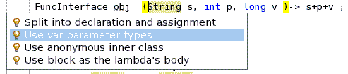
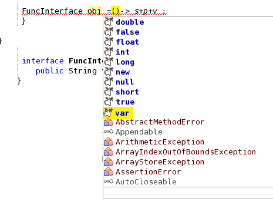

Apache NetBeans
Apache NetBeansApache NetBeans (incubating) 10.0 Features
Apache NetBeans (incubating) 10.0 is the second major release of the Apache NetBeans IDE. It was released in December, 2018. Click here to download this release.
This release is focused in adding support for JDK 11, JUnit 5, PHP, JavaScript and Groovy, as well in solving many issues.
JDK 11 Support
JDK 11 support has been enhanced in the following ways:
-
Integration with the nb-javac project, adding support for JDK 11.
-
Removed the CORBA modules.
-
Support for JEP 309, Dynamic Class-File Constants.
-
Support for JEP 323, Local-Variable Syntax for Lambda Parameters.
-
Support for LVTI Support for Lamdba Parameters

-
Code completion for var lambda parameters

See the JDK 11 Confluence Page for more detailed features.
PHP Support
All the PHP support for NetBeans 10 was contributed by our NetBeans committer Junichi Yamamoto.
These are some of the new features:
PHP 7.3
You can now add trailing commas in function calls under PHP 7.3 (mailing list thread).
And also use the list reference assignment

The flexible Heredoc and Nowdoc Syntaxes are also supported.
PHP 7.2
For PHP 7.2 we support trailing commas in list syntax, coloring for object types and PHP version in project properties.
PHP 7.1
For PHP 7.1 we have class constant visibility, multi-catch exception handling, nullable types, support for keys in list(), coloring for new keywords (void, iterable).
More PHP features
And more: context sensitive lexer, PHPStan support, debugger, twig, hints, suggestions, code completion… visit PHP Features Page and NetBeans 10 New and Noteworthy for more details on PHP support.
JUnit 5
JUnit 5.3.1 has been added as a new Library to NetBeans, so you can quickly add it to your Java projects. For Maven projects without existing tests, JUnit 5 is now the default JUnit version.
The JUnit 5 @Testable annotation is also supported. Any method that includes
an annotation that inherits from this, will be allowed to be executed with
these action menu items.
Default JUnit 5 Test Template provided out of the box. Note JUnit 5 doesn’t currently support test suite’s for its Jupiter engine, so the template provided will attempt to create a test suite using the Vintage engine.

{kind=link}
{kind=link}
{kind=link}